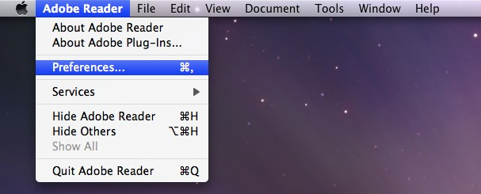
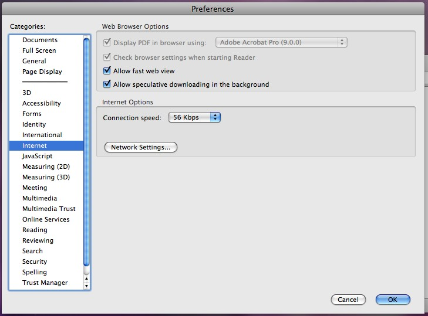
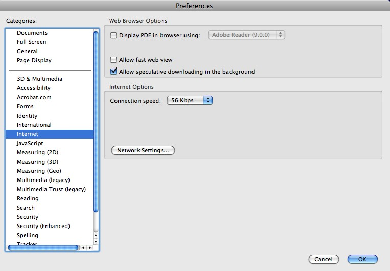

Fixing Problems Viewing Library Course Reserves Using the Safari Browser on Macintosh Computers
Macintosh users may not be able to view Library Course Reserve files using the Safari web browser if Adobe Reader or Adobe Acrobat has been installed on the computer. This problem can be fixed by using the built-in PDF previewer in Safari rather than the Adobe plug-in to view PDF files.
Here are instructions for switching from the Adobe plug-in to the built-in Safari plug-in.
- Make sure Safari is closed.
- Open Adobe Reader or Adobe Acrobat.
- Open the Preference menu for Adobe.

- In the Prefereence window, choose the Internet category.

- Uncheck both the box marked "Display PDF in browser using:" and the box marked "Allow fast web view".

- Click on the OK button to save your changes and then close Adobe Reader or Adobe Acrobat..
- Open Safari, go to Chalk and confirm that you can now view Library Course Reserves.
Still having problems? Please contact Library Course Reserves Staff.